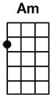
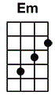
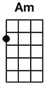
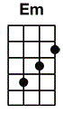

#105 Bellyache
 




(Intro)
[C] [Am] My
[Em] ...
[C] [Am] My
[Em] ...
[C] [Am] [Em]
(Verse)
[C] Sitting all alone
[Am] Mouth full of gum
In the [Em] driveway
My [C] friends aren't far
In the [Am] back of my car
Lay their [Em] bodies
[Pre-chorus]
Where's my [C] [Am] mind
Where's my [Em] mind
(Verse)
They'll [C] be here pretty soon
[Am] Looking through my room
For the [Em] money
I'm [C] biting my nails
I'm too [Am] young to go to jail
It's kinda [Em] funny
[Pre-chorus]
Where's my [C] [Am] mind
Where's my [Em] mind
Where's my [C] [Am] mind
Where's my [Em] mind
(Chorus)
Maybe it's in the [C] gutter
Where I left my [Am] lover
What an [Em] expensive fate
My V is for [C] Vendetta
Thought that I'd feel [Am] better
But now I got a [Em] bellyache
(Verse)
[C] Everything I do
The [Am] way I wear my noose
Like a [Em] necklace
I [C] wanna make 'em scared
Like I [Am] could be anywhere
Like I'm [Em] reckless
(Bridge)
I lost my [C] [Am] mind
I don't [Em] mind
Where's my [C] [Am] mind
Where's my [Em] mind
(Chorus)
Maybe it's in the [C] gutter
Where I left my [Am] lover
What an [Em] expensive fate
My V is for [C] Vendetta
Thought that I'd feel [Am] better
But now I got a [Em] bellyache
Maybe it's in the [C] gutter
Where I left my [Am] lover
What an [Em] expensive fate
My V is for [C] Vendetta
Thought that I'd feel [Am] better
N.C.
But now I got a bellyache